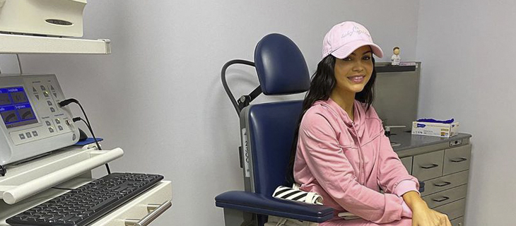
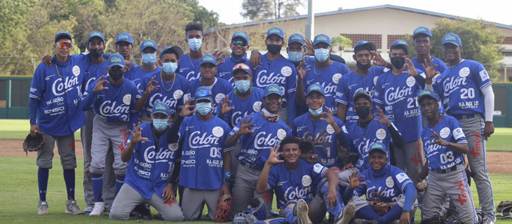

Está en reposo.Natti Natasha aclara su situación de salud

La cantante urbana Natti Natasha tuvo que salir a aclarar su situación de salud luego de que surgieran fuertes rumores de que tenía el virus del COVID-19.La intérprete de 'La mejor versión de mi' explicó en su cuenta de Twitter que tiene que tomar reposo vocal ya que tiene laryngitis.
También puede leer: Desgarrador.Actor italiano se graba junto a su hermana muerta por coronavirus y pide ayuda | Video
'Buenas tardes a todos los que se han preocupado por mi, y mi estado de salud.Me encuentro en reposo vocal por 7 días ya que tengo laryngitis.Subo esta nota para descartar comentarios referente al corona , gracias a Dios estamos bien' reveló.
Para dejar las cosas bien claras la artista colgó también el resultado médico donde especificaba su condición de salud.Hace unos días comentó en Instagram que visitó el otorrinolaringólogo para ver si se mejoraba.
Posted On: 2020-03-13T00:00:00

Content Date: 2020-03-13
Download Date: 2021-05-13
Document ID: L0C04C92A